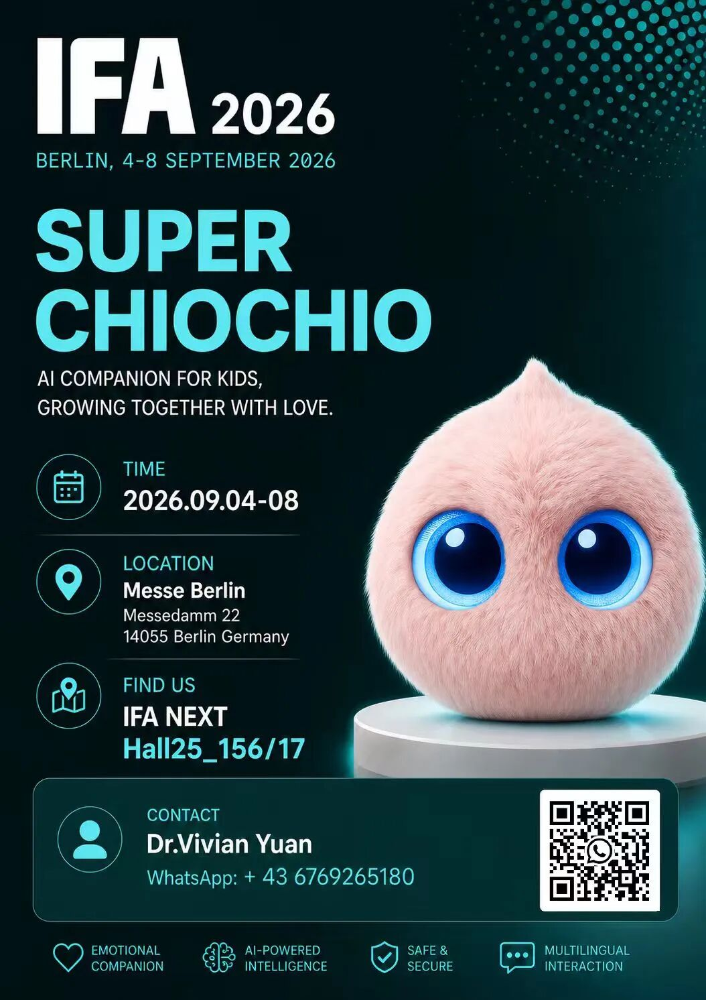
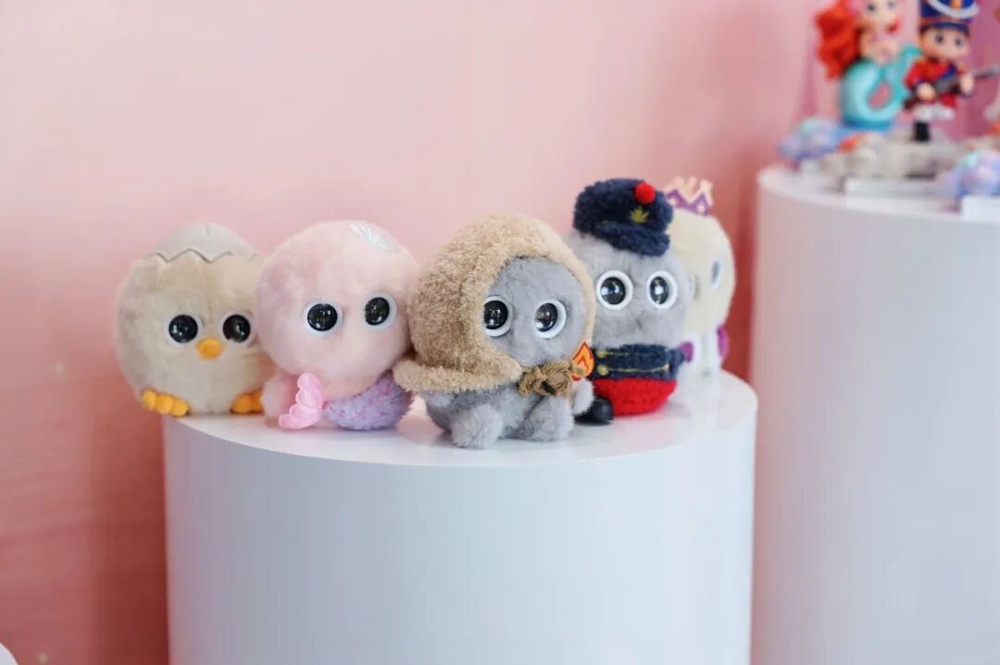
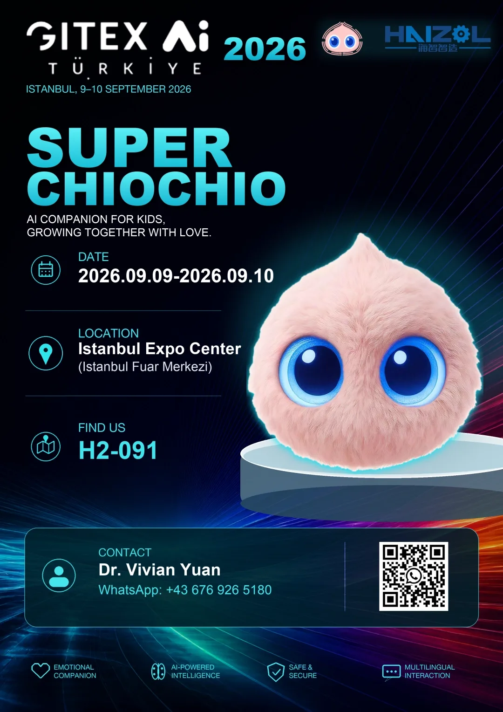
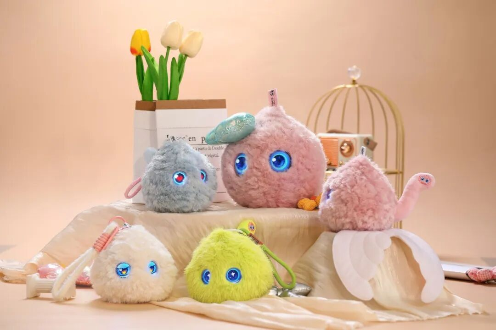

8 月 28 日，超级球球 × 安徒生系列 AI 儿童产品在丹麦王国驻上海总领事馆完成全球首发。如今，属于超级球球的全球旅程，正式开启！
9 月，超级球球将携“超级球球 AI 儿童成长陪伴机器人系列”及“超级球球 × 安徒生联名 AI 儿童产品系列”，连续亮相德国柏林 IFA 2026 与土耳其伊斯坦布尔 GITEX AI Türkiye 2026。
从上海出发，走向柏林，再到伊斯坦布尔——超级球球正在把来自中国的 AI 儿童陪伴产品，带向更广阔的全球市场。
第一站｜德国柏林 IFA 2026
时间：2026 年 9 月 4 日—8 日
展台：IFA NEXT Hall 25_156
地点：德国 · 柏林 Messe Berlin
拥有百年历史的 IFA，是全球消费电子、家电与未来科技领域最具国际影响力的科技盛会之一。2026 年，来自全球的科技品牌、创新企业、行业专家和消费者再次汇聚柏林，共同探索 AI、机器人、智能生活等领域的下一代创新。

此次 IFA，超级球球将重点展示两大产品体系：
1. 超级球球 AI 儿童成长陪伴机器人系列
以“AI 科技 × 心理学 × 儿童成长”为核心，将 AI 从简单的问答工具，进一步带入儿童长期成长陪伴场景。
围绕孩子成长过程中的情绪识别、温暖陪伴、长期记忆、成长记录与安全守护等需求，让 AI 不仅能够和孩子交流，更能够逐渐理解孩子、记住孩子，并陪伴孩子成长。
2. 超级球球 × 安徒生联名 AI 儿童产品系列
当拥有两百多年文化生命力的安徒生童话，与新一代人工智能相遇，经典童话正在获得新的表达方式。
丑小鸭、坚定的锡兵、小美人鱼等经典童话形象，从书本中的故事人物，走进可以对话、可以陪伴、可以与孩子共同成长的 AI 时代。

超级球球希望通过 AI，让世界经典文化以新的方式重新走进全球家庭。
第二站｜土耳其 GITEX AI Türkiye 2026
时间：2026 年 9 月 9 日—10 日
展台：H2-091
地点：土耳其 · 伊斯坦布尔 Istanbul Expo Center
结束柏林 IFA 之后，超级球球将继续前往横跨欧亚大陆的重要城市——伊斯坦布尔，亮相 GITEX AI Türkiye 2026。
GITEX 是全球具有重要影响力的科技展会品牌之一。GITEX AI Türkiye 聚焦人工智能及新一代科技产业，并连接企业、创新者、投资机构与产业合作伙伴。

对于超级球球而言，伊斯坦布尔不仅是一座城市，更是连接欧洲、亚洲及中东市场的重要节点。
超级球球希望通过此次亮相，与更多海外渠道商、品牌合作伙伴、教育机构、科技企业及产业伙伴建立连接，进一步推动 AI 儿童陪伴产品进入全球不同国家和家庭。
两大系列，向世界展示中国 AI 儿童产品的新可能
此次欧洲及土耳其之行，我们带去的不只是几款 AI 硬件产品，我们更希望向世界展示一种新的 AI 儿童产品理念：
AI 不应该只是回答孩子的问题，更应该理解孩子的情绪；
AI 不应该只是短暂互动，更应该拥有长期陪伴的能力；
AI 不应该让孩子更加沉迷屏幕，而应该回到真实的交流、表达与成长之中。
基于自研 AI 能力，超级球球持续探索人工智能在儿童情绪陪伴、性格成长、长期记忆、双语交流等场景中的应用。
让科技拥有温度，让 AI 真正进入孩子成长的日常。这是超级球球正在做的事情。

当中国 AI，遇见世界经典
此次出海还有一个特别的意义。
超级球球 × 安徒生联名系列，将第一次在国际科技展会上集中亮相。
从《丑小鸭》关于成长与自信的故事，到《坚定的锡兵》关于坚持与勇气的精神，再到《小美人鱼》关于爱与选择的表达……
安徒生童话跨越两个世纪，陪伴了一代又一代孩子成长。今天，我们希望通过 AI，让这些经典故事拥有新的生命。
从产品研发，到品牌合作；从中国市场，到全球市场。超级球球正在一步一步，把全球化战略变成真实的脚步。
我们期待持续连接全球的渠道伙伴、品牌 IP、教育机构、产业合作伙伴与国际市场资源，共同探索 AI 儿童产品在不同国家、不同文化和不同家庭中的更多可能。
从上海，到柏林，再到伊斯坦布尔。从中国原创 AI，到世界经典 IP。
这一次，我们带着超级球球，也带着安徒生童话，走向世界。
让世界看到中国 AI 儿童产品的创新力量，也让来自不同文化、不同国家的孩子，都能够拥有更温暖的 AI 陪伴。
SUPER CHIOCHIO
下一站，世界。